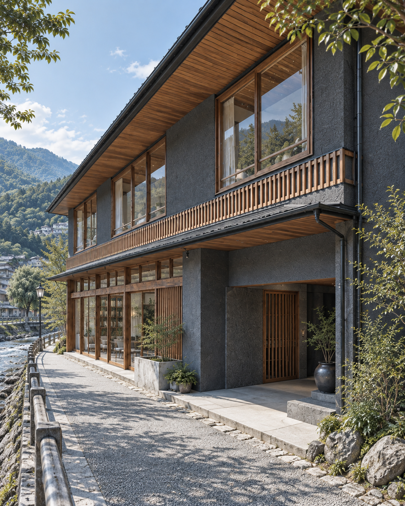
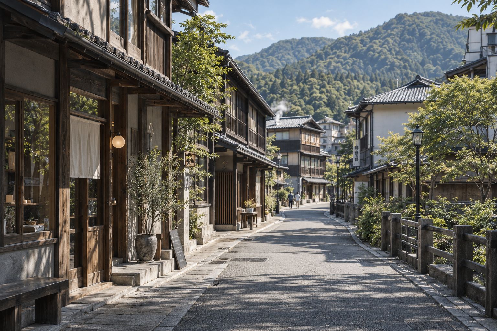
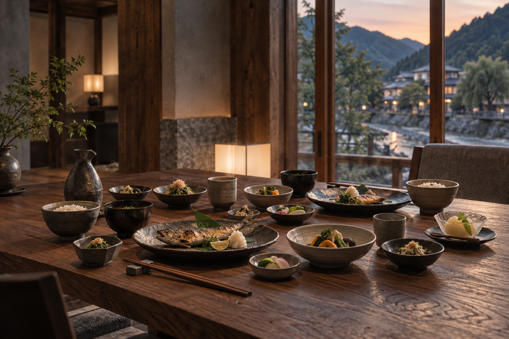
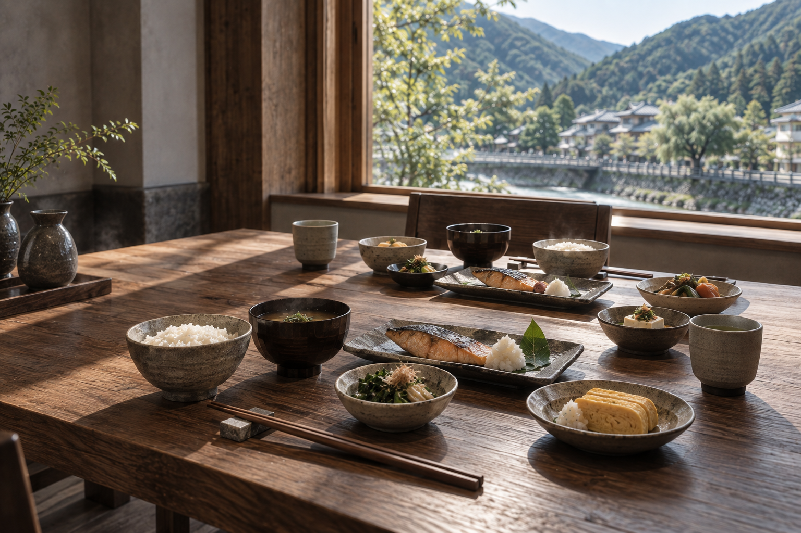
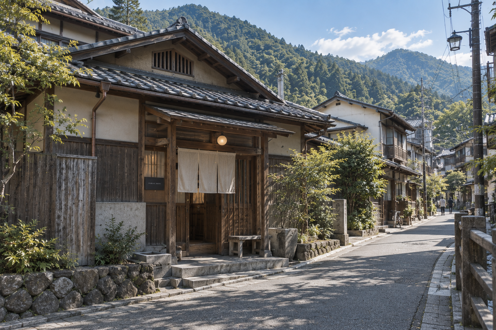
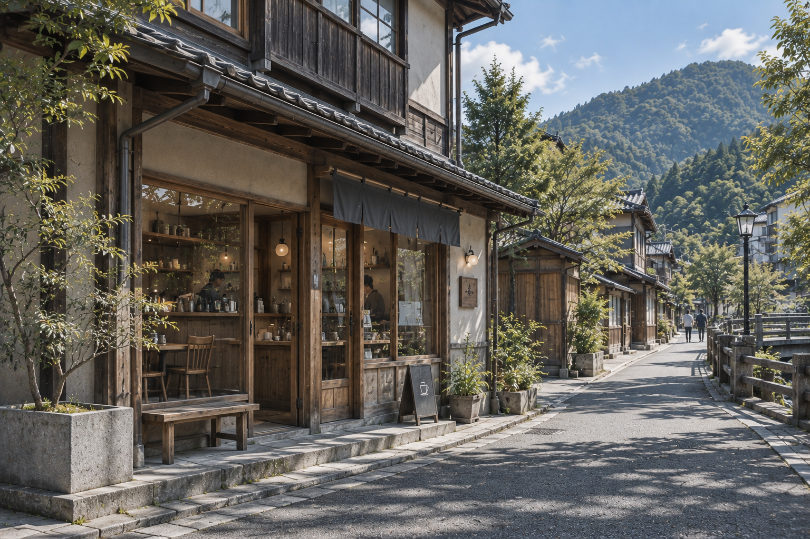
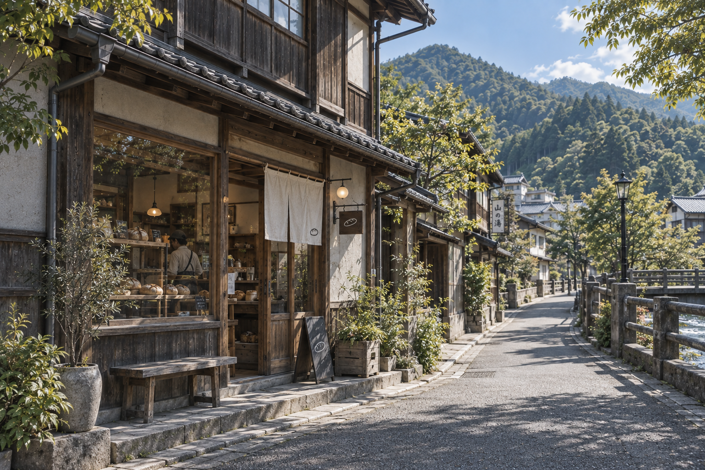
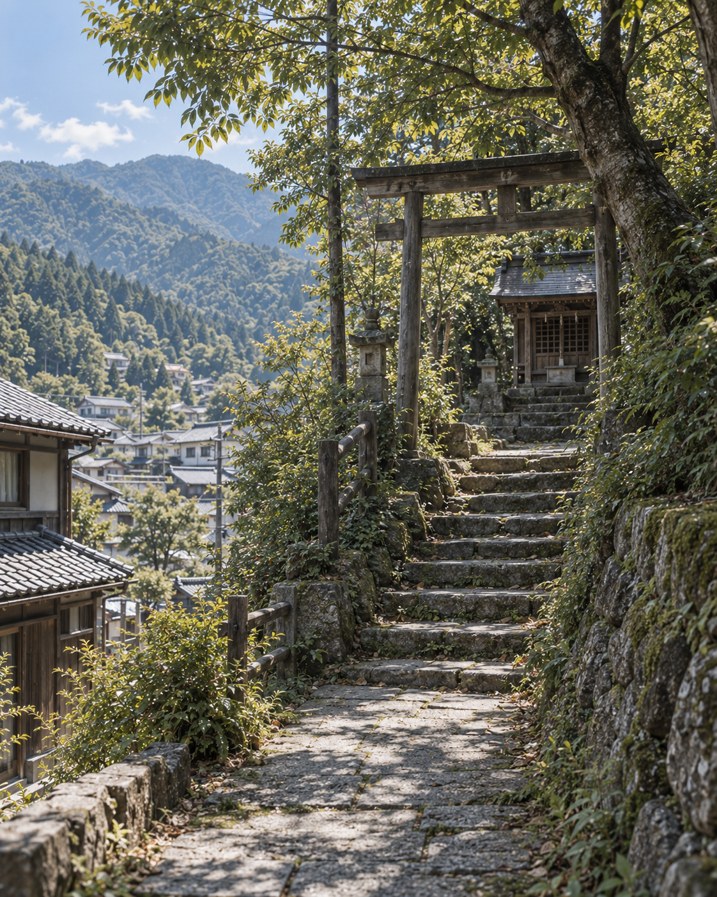
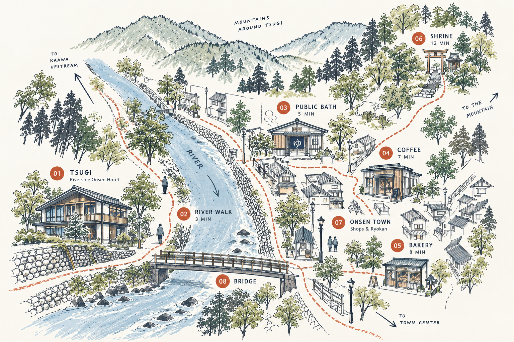

ARRIVE

宿に着く。
荷物を置いたら、
まずはラウンジでお茶を。

宿に着く。
荷物を置いたら、
まずはラウンジでお茶を。

町を歩く。
共同浴場の前を通り、
川沿いまで少し遠回り。
目的地はなくても構いません。

湯に入る。
夕方の光が残るうちに、
小さな浴場へ。

食べる。
その季節、
この土地で食べたいものを。

何もしない。
本を読む。
話す。
外を見る。
部屋へ戻る時間も決まっていません。

朝の町へ。
夜とは違う川の音と、
店が開く前の温泉街。

朝を食べる。
温かいご飯と味噌汁から、
もう一日を始めます。
AROUND TSUGI
有名な観光地を巡るための案内ではありません。
TSUGIから歩いて行ける、
日常の延長にある場所をご紹介します。




WALK AROUND
TSUGIを中心に、
川、温泉街、店、神社まで。
少し遠回りしても、
一時間あれば戻ってこられる距離です。

客室、温泉、食事について。
VIEW STAY →